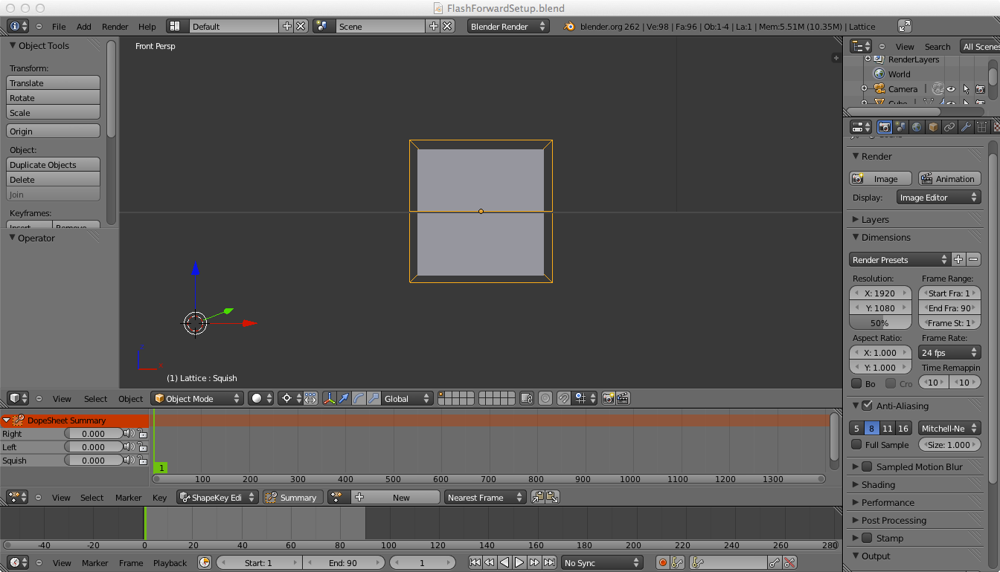

Welcome to the Blender Animation tutorial.
Your other screen should look like this:
Your first animation is now complete! Press Alt-A to watch a preview of the animation. Press ESC to stop the preview.
This is only the beginning! In time, you'll learn to animate many different attributes of a shape, animate complex shapes, and render your animations to make polished 3D animated movies.
First though, you'll have to go back to the very beginning and learn the basics of 3D animation in Blender.
{% endblock %}